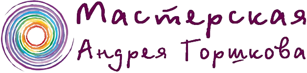
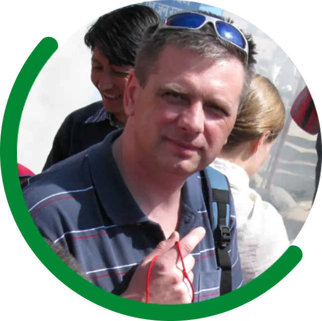
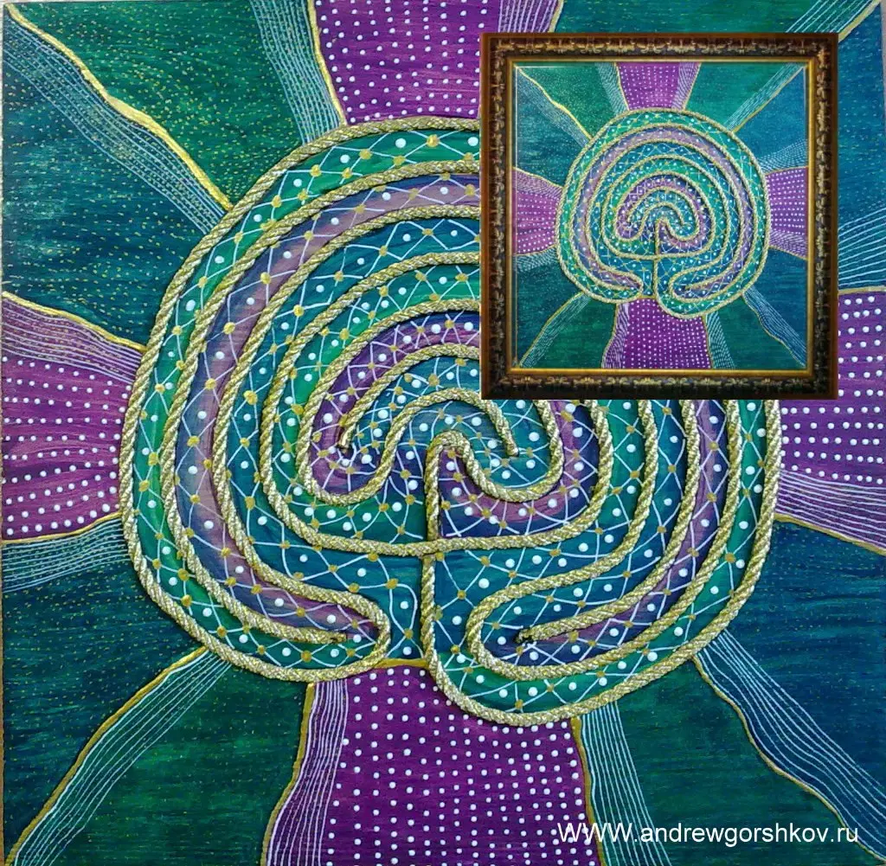
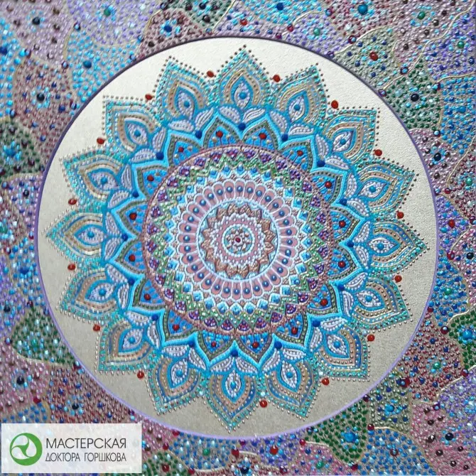
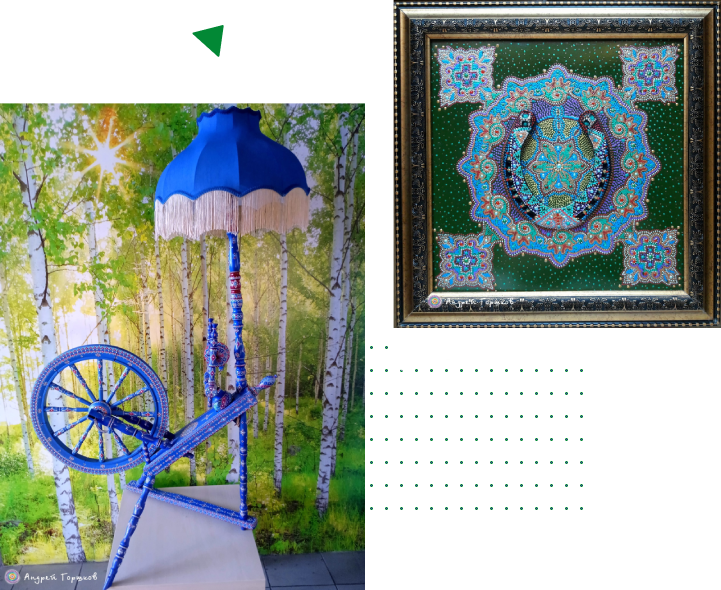
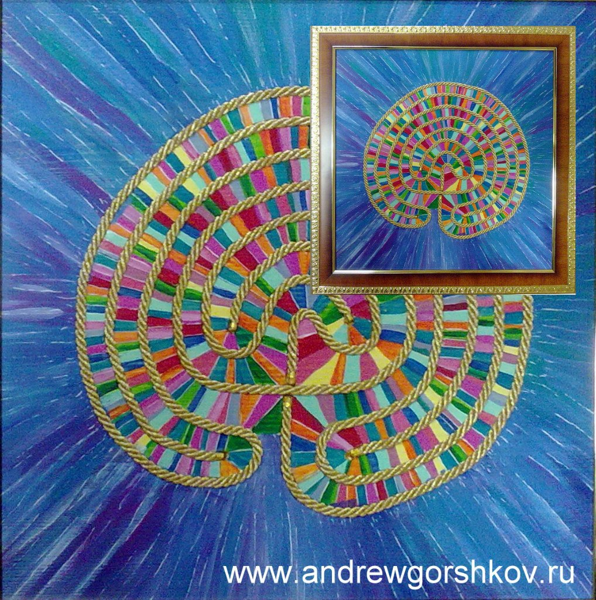
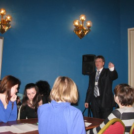
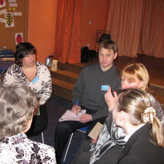
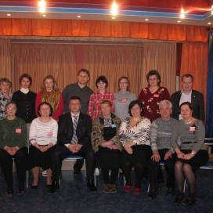

010 WCPC gpRUВсемирный сертификат психотерапевтаВ реестре с 24 декабря 2007 года

Андрей Сергеевич ГоршковСвязатьсяСемейный психотерапевт · автор практик · Санкт-Петербург
Путь к себеначинается с внимания
Я соединяю профессиональную психотерапию, работу с телом и творческую мастерскую — чтобы человек мог яснее услышать себя и найти собственную опору.
с 2007во Всемирном реестре психотерапевтов
очно + онлайниндивидуальная и семейная работа

Консультации по предварительной записи
GrandparentingЕвропейский сертификат психотерапевтаАктивная запись в реестре ОППЛ
Санкт-ПетербургОчная практика и работа онлайнКонсультации по предварительной записи
01
Обо мне
Врач, исследователь человеческого состояния и мастер
Родился 12 октября 1959 года в посёлке Мга Ленинградской области — в семье врача и машиниста поезда.
Медицинские книги матери я начал читать почти вместе с азбукой. В мастерской отца учился работать напильником и рубанком. Эти две линии — помощь человеку и создание вещей своими руками — спустя годы соединились в одной практике.
Сегодня я работаю как семейный психотерапевт, веду индивидуальные консультации и семинары, создаю персональные лабиринты, мандалы и индифферентные произведения искусства.
Профиль в реестре ОППЛПрофессиональный путь
От клинической медицины — к целостной работе с человеком
- 1982
Клиническая медицина
Окончил лечебный факультет ЛСГМИ, работал травматологом в больнице имени Г. И. Чудновского.
- 1986–1988
Ординатура
Травматология, ортопедия и военно-полевая хирургия.
- 1991
Психосинтез
Начало системного обучения психотерапевтическим подходам.
- 2001–2004
Семейная психотерапия
Профессиональная подготовка в системной семейной психотерапии.
- 2007
Международное признание
Всемирный сертификат психотерапевта № 010 WCPC gpRU.
- сейчас
Практика и мастерская
Семейная и индивидуальная работа, авторские семинары, искусство и предметы ручной работы.
В актуальной профессиональной визитке также указаны сертификация в ДЭНС-терапии и руководство ДЭНАС-центром в Санкт-Петербурге.
Профессиональная визитка02
Практика
Работа с человеком — целостно и бережно
Подход подбирается под конкретную историю, запрос и состояние — без единого сценария для всех.
Семья и отношения
Системная семейная психотерапия: отношения в паре, повторяющиеся конфликты, семейные кризисы и поиск нового способа быть вместе.
Состояние и тело
Мультимодальная и телесно-ориентированная работа с переживаниями, напряжением и личными ресурсами.
Образ и творчество
Арт-терапевтические практики, цвет, форма и ручная работа как язык внимания к внутреннему опыту.
Личный путь
Индивидуальные консультации, авторские семинары и практики самопознания — очно и онлайн.
03
Мастерская
Форма, цвет и путь к центру
Авторские объекты создаются вручную. Они используются как часть творческой и рефлексивной практики — способ замедлиться, сосредоточиться и встретиться со своим внутренним опытом.




Лабиринты
Персональные, настольные, дорожные и интерьерные.
ИПИ-картины
Индифферентные произведения искусства, созданные автором.
Предметы мастерской
Работы из дерева и другие индивидуальные авторские объекты.
Авторские практики и объекты не заменяют медицинскую диагностику и лечение, когда они необходимы. Формат работы обсуждается индивидуально.
04
Видео

«Мастерская Доктора Горшкова»
Публикация о мастерской и авторском подходе Андрея Сергеевича. Ссылка ведёт на подтверждённую страницу VK Видео; прямой адрес ролика открывается средствами ВКонтакте.


05
События и упоминания
Мастерская выходит за пределы кабинета
Авторские работы Андрея Сергеевича Горшкова показывались на библиотечных и культурных площадках Санкт-Петербурга и Псковской области.
Начать разговор
Расскажите, с чем вы хотите разобраться
Первая связь — короткий разговор, чтобы понять запрос и выбрать подходящий формат: индивидуальная или семейная консультация, онлайн или очно.
+7 921 919-73-33